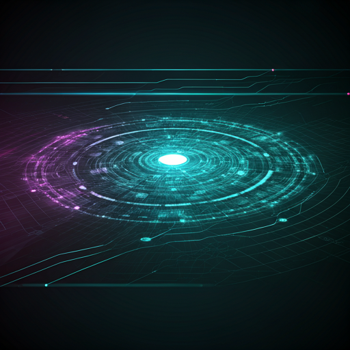

Project Laboratory
A collection of technical deep-dives into AI engineering, agentic systems, and high-performance data pipelines. These projects bridge the gap between theoretical deep learning and scalable production application.
Calming AI: Agentic Mental Wellness Platform
Architected a production-grade multi-agent platform using LangGraph StateGraph, orchestrating specialized agents for emotional assessment and wisdom therapy with sub-second routing latency.

Industrial Experience & Engineering
Multimodal RAG with ColPali
Engineered a multimodal RAG pipeline for cross-modal retrieval across 1,000+ page technical PDFs, integrating Qdrant for scalable document search.
RibCageImp: 3D Implant Gen
A 3D deep learning framework using UNet and diffusion architectures to predict patient-specific ribcage implant geometry from clinical CT scans.
Predictive E-Commerce Systems
Developed supervised ML models for next-purchase prediction, improving forecasting accuracy by 5% and streamlining dataRetraining workflows.
Predicting Multiple Product Features
Proposed a dual-backbone architecture using ViT-H/14-quickgelu and ConvNext-XXLarge for predicting product attributes from images, achieving a score of 0.802.